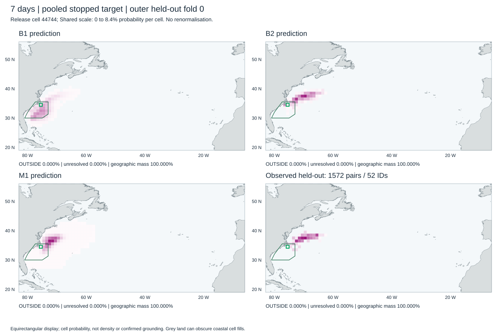
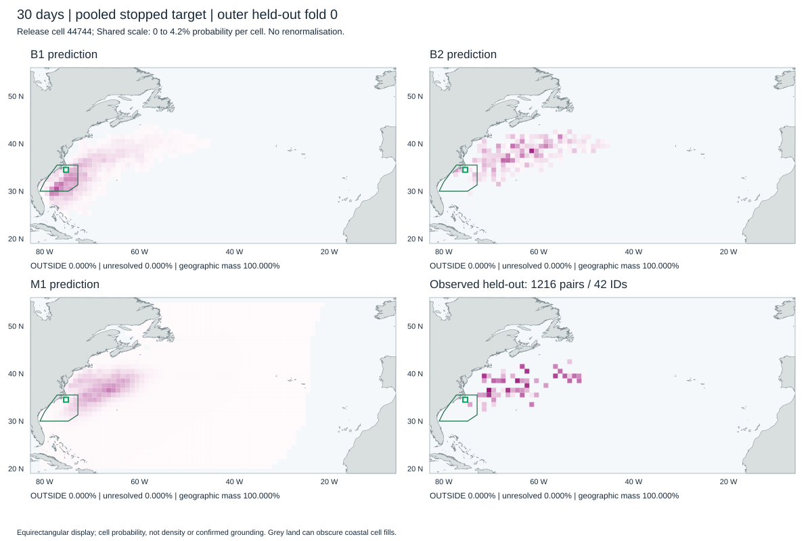

Development-only, pooled stopped forecasts. The observed panels use matching held-out IDs. Shared scales within each figure; OUTSIDE and unresolved remain visible. Read REPORT.md and summary.csv for support and validation limits.
Full method and audit report · Summary table

